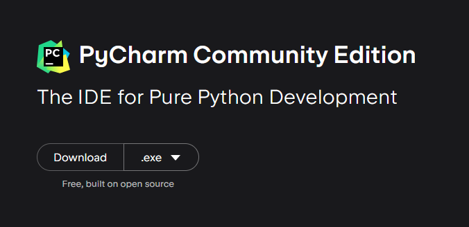
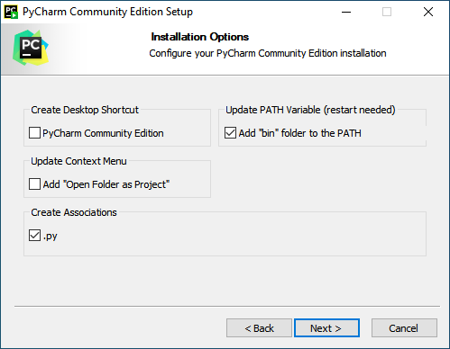
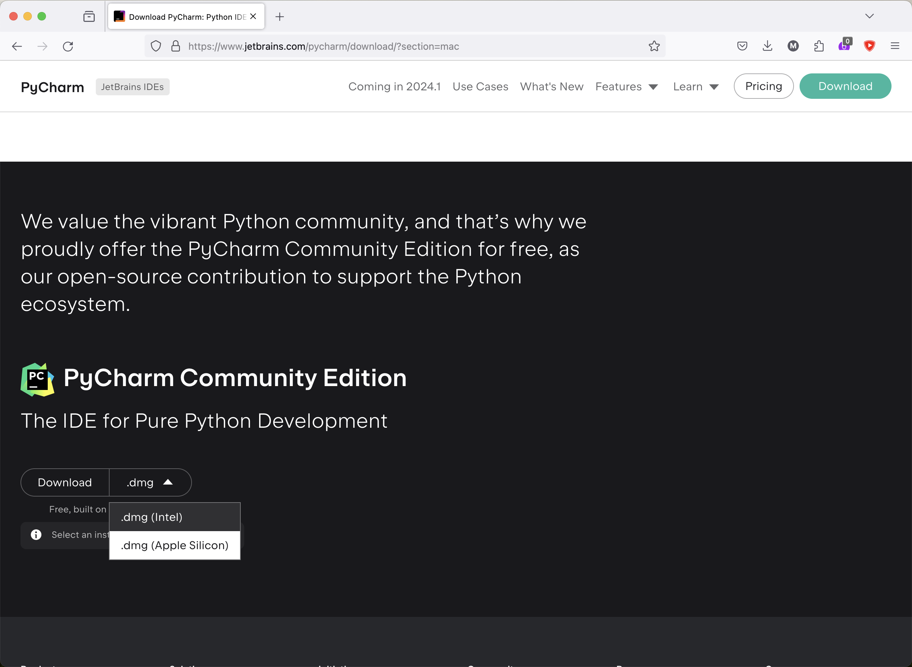
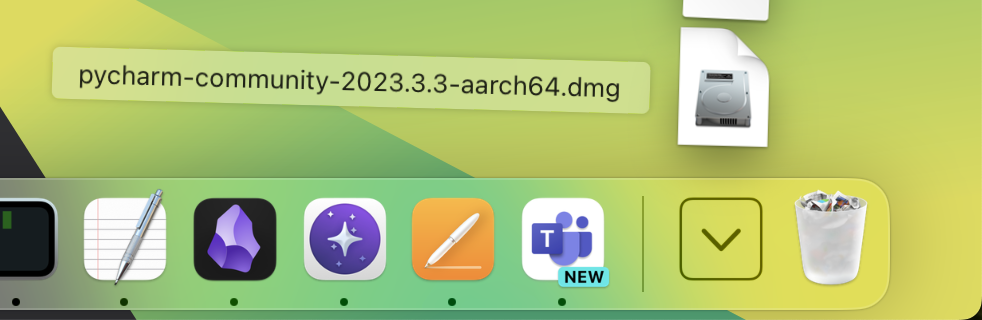
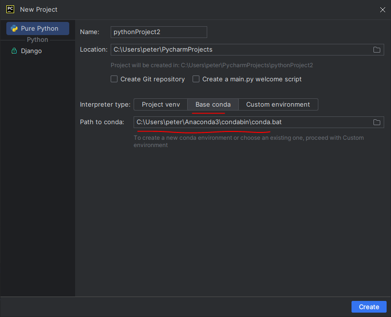
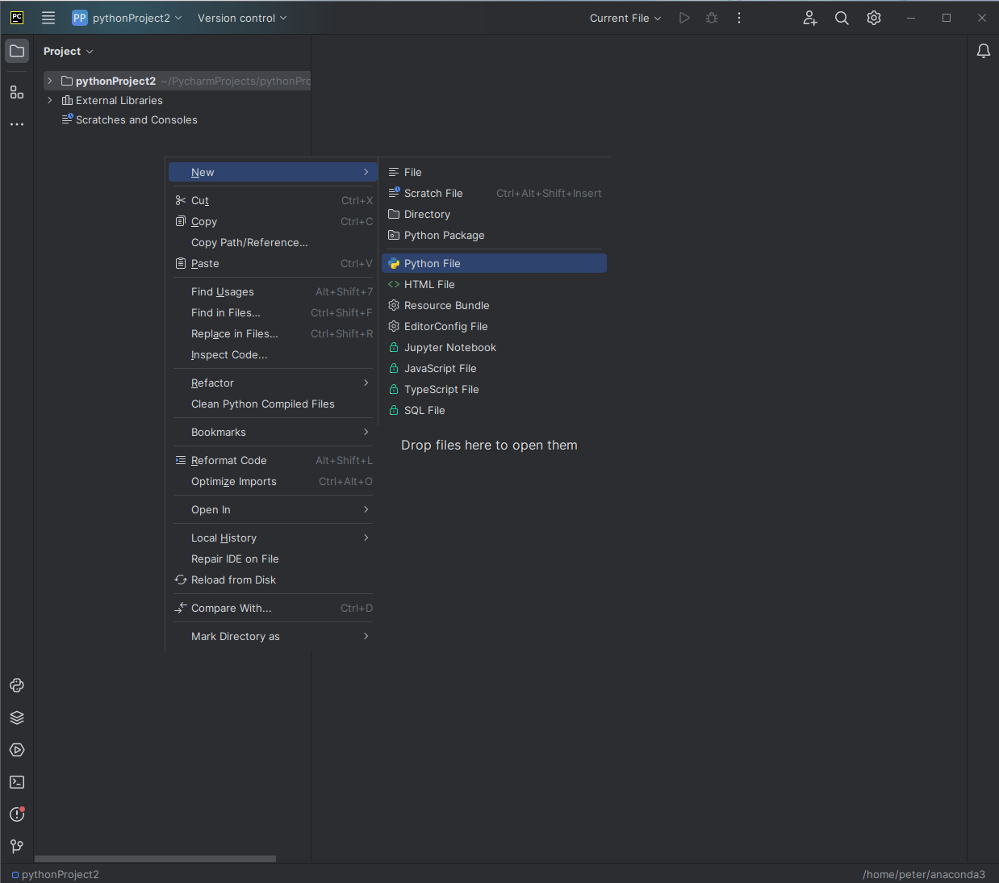

Installing Python
Table of Contents
This note is a step-by-step guide to getting a working set up to start working with the Python programming language. We will be using Anaconda and PyCharm. Anaconda contains both the base python as well as the packages we will need in this series. We are using it primarily because it is easy to set up. PyCharm is an IDE for python.
1. Windows
1.1. Installing Anaconda
Head to the anaconda download page and download the installer. Run the downloaded program, there is no need to alter any of the settings.
1.2. Installing PyCharm
Head to the PyCharm download page and scroll down to PyCharm Community Edition. Download and run the installer.

Click through the installer. In the Installation Options screen, check the two options shown below. You may also choose the other options, but ensure that at least the boxes shown below are checked:

2. MacOS
2.1. Installing Anaconda
Head to the anaconda download page and download the graphical installer. Select the M1 version if your Macbook is newer than fall 2020 and the non-M1 version otherwise. Once the file is downloaded, double click it and follow the instructions.
2.2. Installing PyCharm
Head to the download page and scroll down until you see this:

If your Macbook is before fall of 2020, select intel, if it's newer, select apple silicon. Once the download is finished, you can click on it here in your launcher

Drag the file as in the video:
3. Other Operating Systems
If you use a different operating system, you are on your own.
4. Checking that Everything Works
Open PyCharm and select new project. In the interpreter type section, select base conda. The field path to conda should be filled automatically, and there is no need to modify it:

Click create. Right click in the left side of the window and create a new python file

Copy the below code into the new file and click the play button in the top right.
import numpy as np
import matplotlib.pyplot as plt
import csv
l = csv.field_size_limit()
print(l)
data = {'a': np.arange(50),
'c': np.random.randint(0, 50, 50),
'd': np.random.randn(50)}
data['b'] = data['a'] + 10 * np.random.randn(50)
data['d'] = np.abs(data['d']) * 100
plt.scatter('a', 'b', c='c', s='d', data=data)
plt.xlabel('entry a')
plt.ylabel('entry b')
plt.show()
an_array = np.array(range(11))
total = np.sum(an_array)
if total == 55:
print('IT SEEMS THE INSTALLATION HAS BEEN SUCCESSFUL!')
exit(0)
print('SOMETHING HAS PROBABLY GONE WRONG!')
A window with a plot should pop up. Once you close it the last two lines in the bottom panel should read
IT SEEMS THE INSTALLATION HAS BEEN SUCCESSFUL! Process finished with exit code 0
In this case everything is probably set up correctly.